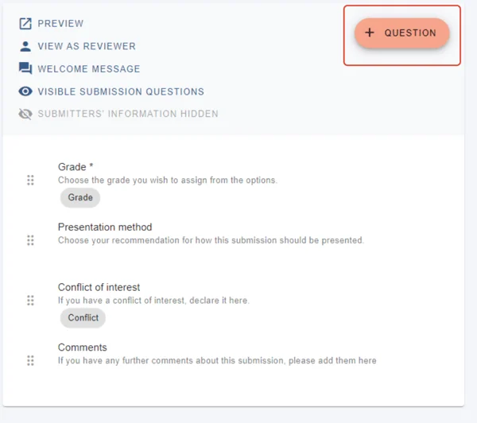
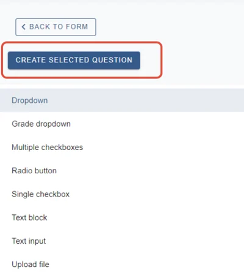
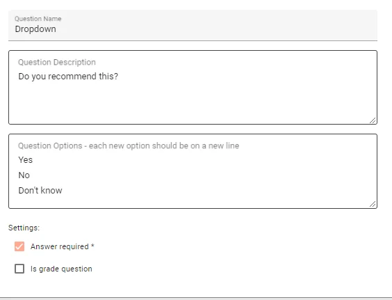
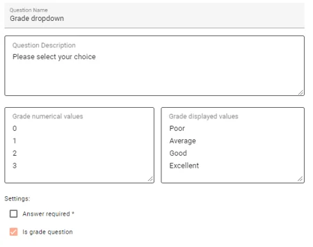
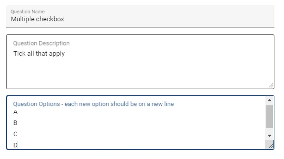
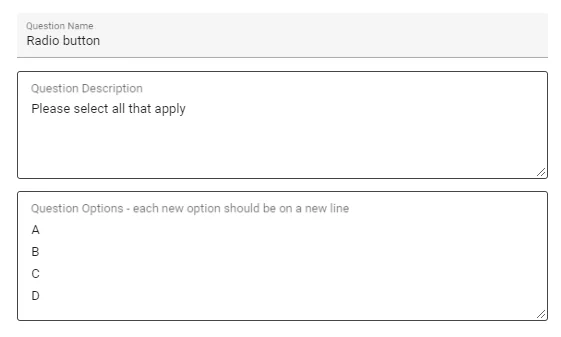
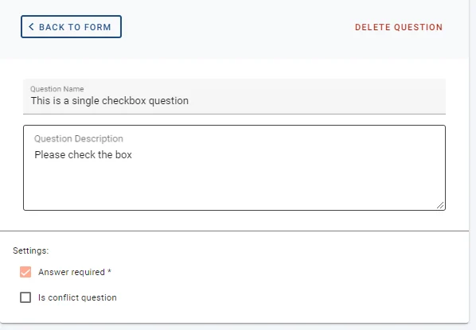
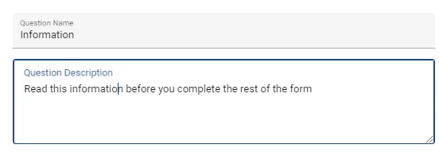
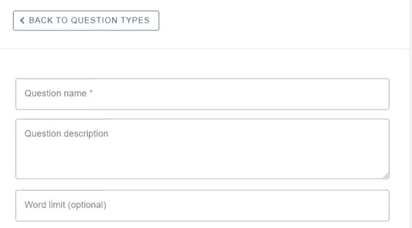
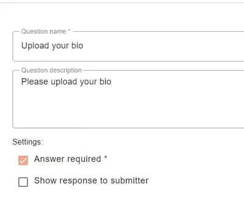

Review question types
For event organisersNot an organiser?
As well as the default questions, you can add supplementary questions, should you require. They are split into various types.#
Skip to written instructions.
Go to Event dashboard → Abstract Management → Review → Forms & Setup
Click the +Question button.

Select the type you wish to create and then click Create selected question

Dropdown (Presentation question on default form)
The question will provide options in dropdown form, only one of which the reviewer can pick.

Grade dropdown (The grade question on default form)
This question will provide grade options, with the option to display descriptive choices to the reviewer, with numerical values in the background. For example, the value of 2 will be applied to the choice, 'Good':

Multiple checkbox question
The question will appear in checkbox form and the reviewer can check as many boxes as relevant.

Radio button
A radio button question is similar to the dropdown - the reviewer can choose just one from a list of options.

Single checkbox**
Provides a single checkbox for the reviewer to check, e.g. for permission, confirmation etc.
Remember to check the Answer required box if the question is mandatory.

Text block question
Used for giving information or instructions to the user and doesn't require a response.

Text input
This question allows for free text. You can add a word limit, if you require.

Upload file
This question can be used if you require the reviewer to upload a file of any type.


Did this page solve it?
Thanks — this helps us fix it.
Didn't solve it? Ask our support team
No question is too small, and there's no charge for asking. Raise a ticket and someone who knows the software will pick it up.